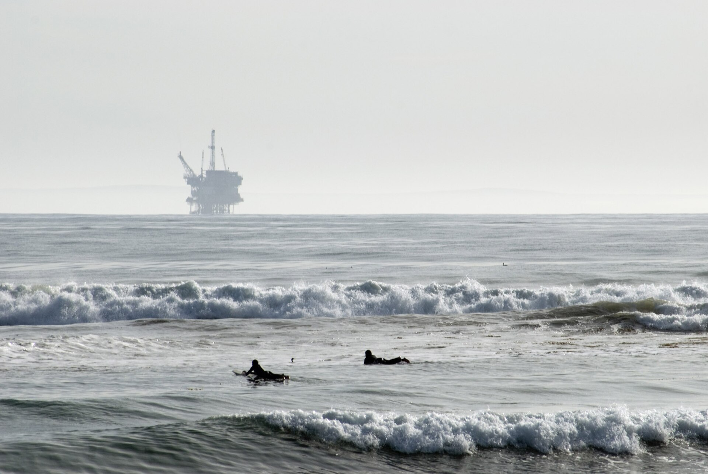

Водоизоляция / Conformance Control
Решение проблем обводнения добывающих скважин и выравнивание профиля приёмистости нагнетательных. Более 100 успешных операций по всему миру: вертикальные и горизонтальные скважины, песчаники и карбонаты.
Подробнее →